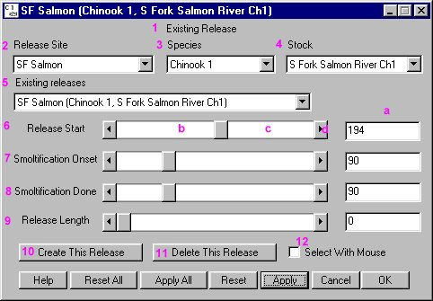

Release Tool Features
Parameters for individual releases are set in the Release Tool window. Multiple releases can be identified for any site. Setting release parameters uses the Release Tool window and the Release Schedule graph window.

Release Tool window
Release Tool features and functions
- Existing Release (1): Indicates whether the release information currently displayed is an existing release or a new release. If the window does not show text on this line, then select a release from the Existing releases (5) or follow the directions to Create New Release.
- Release Site (2): Identifies release site. Select release site (includes both existing and possible release sites) from the list.
- Species (3): Identifies species of release: Chinook 0, Chinook 1, or Steelhead. Select species from the list.
- Stock (4): Identifies stock of release. This can be set to "Generic" or a specific stock can be selected, e.g. Catherine Creek Ch1. Select stock from the list.
- Existing releases (5): Identifies the active existing release. You can select another existing release from the list.
- Release Start (Julian Day) (6): Specifies the first day of a release. This parameter can be changed by:
- typing in the text box on the right of the slider (a), or
- dragging the slider box (b), or
- clicking on either side of the slider box (c) to adjust the Julian Day value by increments of 10, or
- clicking on the end-arrows (d) of the slider to adjust the Julian Day value by an increment of one.
- Smoltification Onset (Julian Day) (7): Specifies the Julian Day at which fish will begin to migrate. This parameter is used by the Migration Equation to determine onset of migration. This parameter can be edited the same as Release Start.
- Smoltification Done (Julian Day) (8): Specifies the Julian Day by which all fish in the release will have started migration. This serves to "spread fish out" in a release. This parameter can be edited the same as Release Start.
- Release Length (mm) (9): Specifies the average length of the fish when released.
- Create This Release (10): Creates a new release with the specified Release Site, Species, and Stock.
- Delete This Release (11): Deletes the release currently displayed in the Release Tool.
- Select With Mouse (12): Actively updates display of release information as mouse moves over the River Map when box is checked.
- Help: Opens context-sensitive help information.
- Reset All, Apply All, Reset, Apply, Cancel, OK.